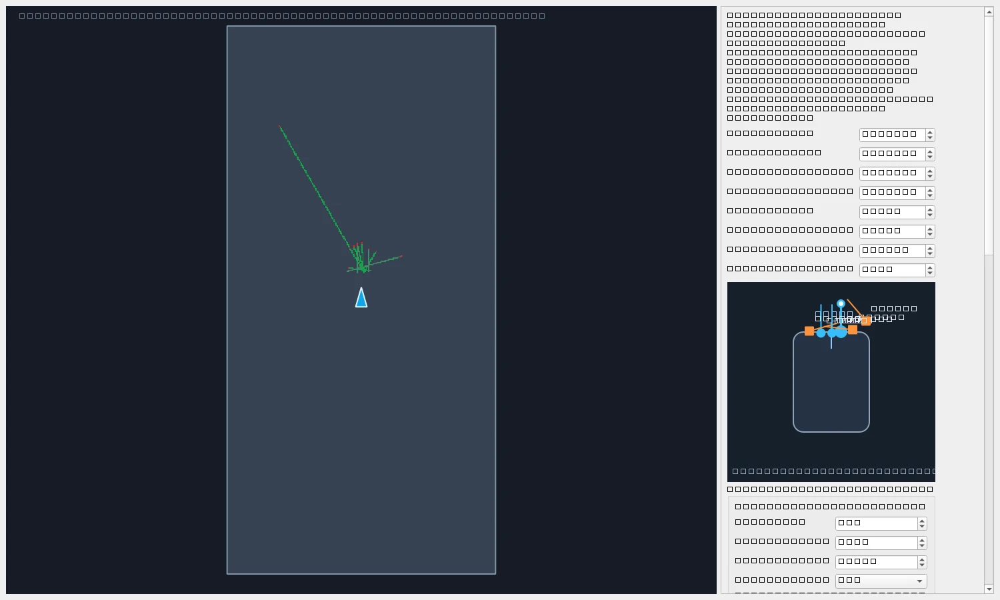

CHRISTCHURCH, NEW ZEALAND
Ideas into
hardware.
Built with intent.
I’m Jules, a mechatronics engineering student building at the intersection of embedded systems, electronics and software.
University of Canterbury
Incoming Integrated Operations Engineering Intern · Rocket Lab
 CUSTOM MECHANICAL DESIGN
BARE-METAL CONTROL · ≈500 Hz
CUSTOM MECHANICAL DESIGN
BARE-METAL CONTROL · ≈500 Hz
01 / SELECTED WORK
Built to solve.
Designed to understand.
From a custom circuit to a complete robot.
A closer look at the decisions, tools and
iterations behind the projects.
GROUP 13 · ENMT221 · 2025FROM CIRCUIT TO CLOSED LOOP
Autonomous line follower
Custom PCBs, bare-metal control and a wireless Bayesian PID tuning workflow.
 KICAD DESIGN VISUALISATION
KICAD DESIGN VISUALISATIONA FOUNDATION FOR ROBOTS
RoboDev
An integrated STM32 / ESP32 robotics carrier platform for motors, sensors and connectivity.

LOCAL MAPPING & TELEMETRYMAKE THE ROBOT OBSERVABLE
RoboCup & robot tooling
Teensy firmware, live diagnostics, sensor mapping and route planning for an autonomous robot.

FIRST PRINCIPLES, MADE INTERACTIVE
Structural frame solver
A 2D direct-stiffness engine with visual modelling, deflected shapes and transparent worked solutions.
University team projects and collaborative hardware work are credited in each case study.
02 / THE WAY I THINK
A systems mindset.
A builder’s instinct.
The most interesting engineering happens where disciplines meet.
I’m studying mechatronics at the University of Canterbury, with a focus on embedded systems, robotics, electronics and engineering software. I enjoy working across the full chain: understanding the physical problem, designing the hardware, writing the control logic and building the tools to see what is actually happening.
That same approach has taken me into aerospace engineering data workflows at Rocket Lab, where I worked on CAD/PLM migration and Python automation used in production.
More about me on LinkedIn ↗Physical systems
Mechanical integration, CAD, prototyping and design iteration.
Electronics & embedded
Custom circuits, PCB design, microcontrollers and firmware.
Control & robotics
PID tuning, sensing, telemetry, mapping and navigation tools.
Engineering software
Python automation, numerical analysis and useful desktop interfaces.
03 / BEYOND THE WORKBENCH
Engineering in
the real world.
Bringing the same curiosity and care
to production workflows and
engineering teams.
Integrated Operations Engineering Intern
Rocket Lab
Returning to Rocket Lab for an integrated operations engineering internship.
CAD Data Intern
Rocket Lab · Auckland, New Zealand
Supported aerospace CAD/PLM migration from SolidWorks / EPDM to Siemens NX and Teamcenter. Built Python tooling for large-scale engineering data workflows used in production.
Mechatronics Engineering
University of Canterbury · Christchurch, New Zealand
Projects spanning embedded systems, robotics, electronics and structural analysis.
04 / NEXT CONVERSATION
Good engineering
starts with curiosity.
Interested in robotics, embedded systems
or engineering tools? Let’s connect.